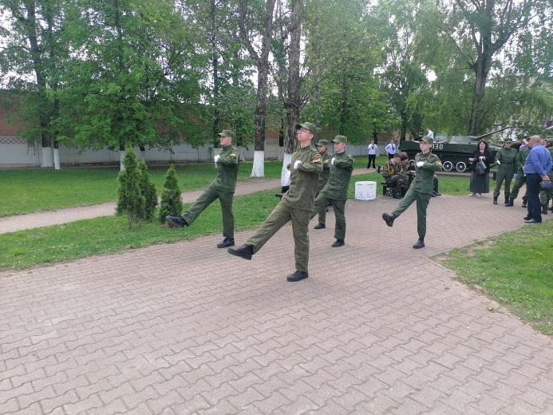
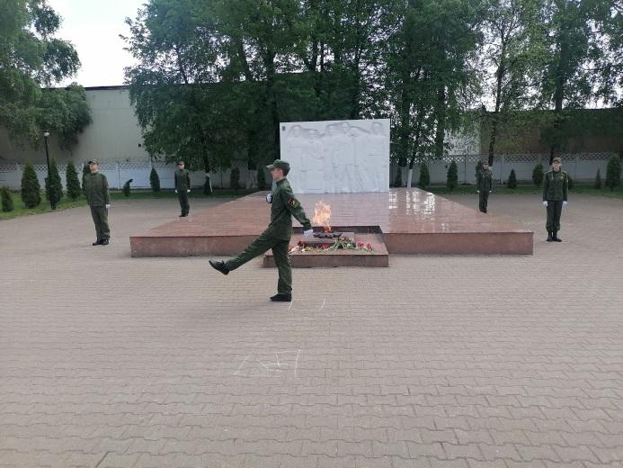
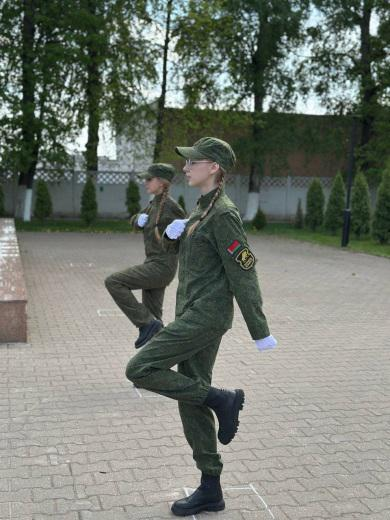
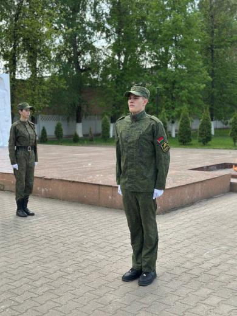
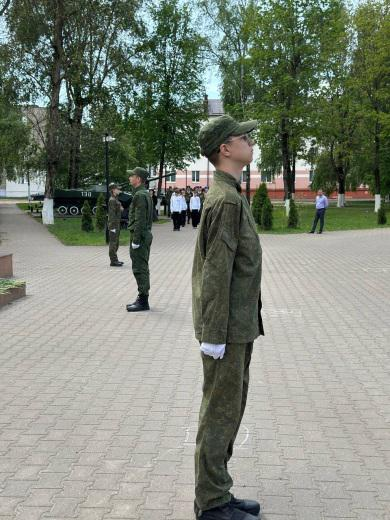

АРСЕНАЛ ПОБЕДЫ: ОТ ДВИЖКА ДО КОТЕЛКА
7 мая юнармейцы военно-патриотического клуба гимназии в составе Мытько Матфея, Линника Степана, Слуцкого Алексея, Паддубской Софии и Юзефович Юлии были удостоены чести первыми открыть Вахту Памяти у мемориала «Жертвам фашизма», расположенного по улице Чапаева г. Борисова.


Вахта Памяти – это дань уважения к поколению людей, даровавшим нам жизнь. Активное участие молодежи в сохранение исторической памяти способствует не только изучению прошлого, но и формированию чувства национальной общности и ответственности.



На протяжении месяца ребята в условиях напряженной учебы тренировались к несению службы в почетном карауле и, пройдя серьезную подготовку, они с честью выполнили свою миссию. Мы гордимся Вами!